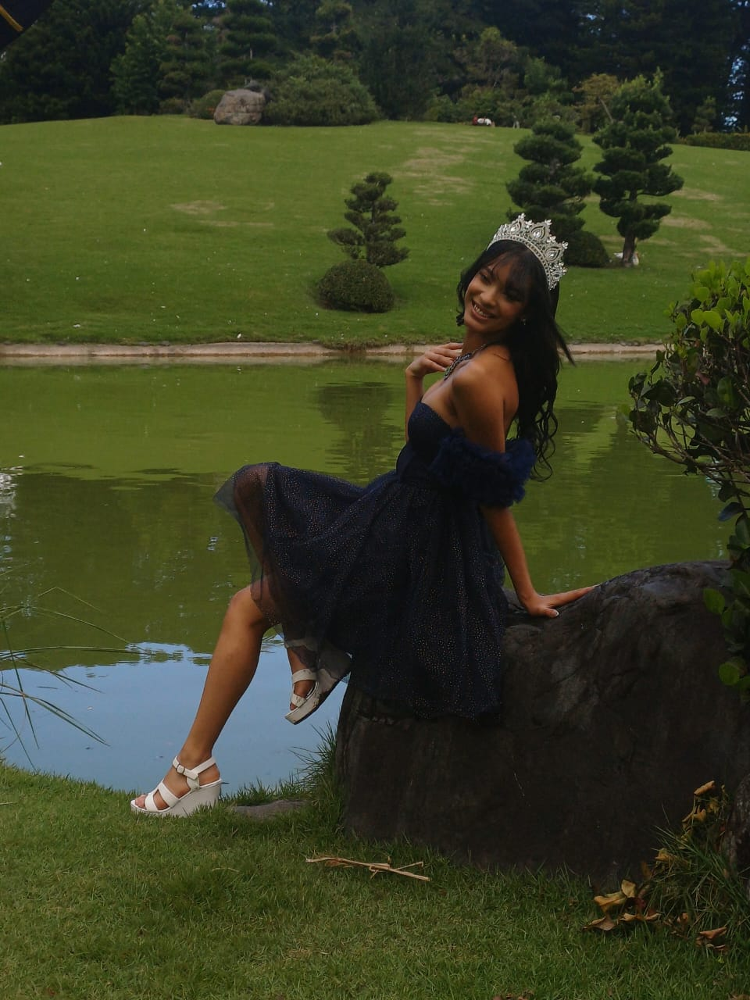

Los años 70-90 son uno de los mejores, no pienso discutirlo y se aguantan u-u

No tengo mucho que decir en realidad
Solo déjame fluir un poco y verás que terminaremos viendo personajes de esos tiempos, ropa y demás
Espero volver a verte pronto, ¿si?
No me iré muy lejos, solo iré a disfrutar un rato de los tiempo 70-90, ya que como no puedo vivirlos debo conformarme con verlos. Si quieres vienes y me acompañas, sino, pues te quedas, no pasa nada...Total, lo único que me molestaría es que alguien venga a criticarme los gustos o mi página
